瑞士平面设计
4 款
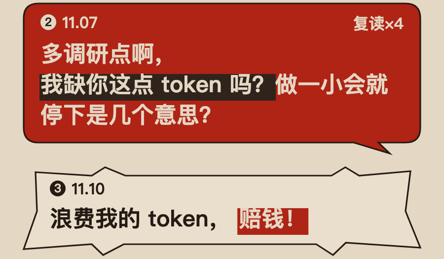
朱砂字模
Armin Hofmann，Ausstellung deutsche Gebrauchsgraphik (ca. 1955)
完整长图
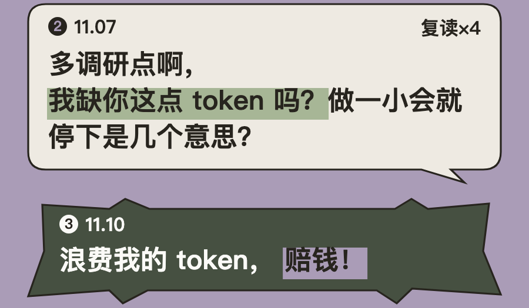
丁香纸偶
Josef Müller-Brockmann，Juni-Festwochen Zürich 1950
完整长图
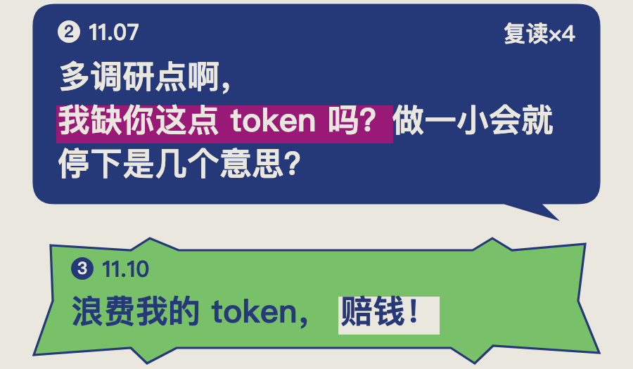
斜切赛场

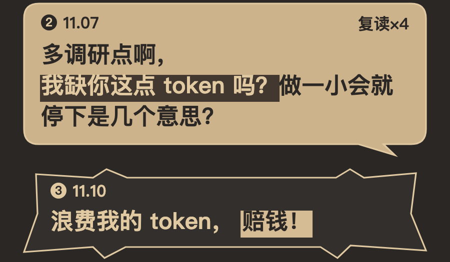
黑铅砂金
Armin Hofmann，Karl Geiser exhibition (ca. 1955)
完整长图日本演艺海报
4 款
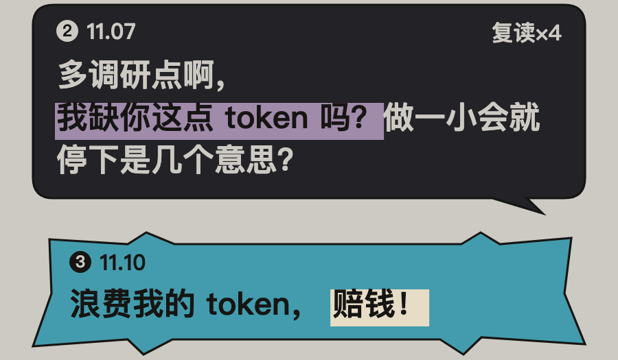
水蓝舞面
Ikko Tanaka 田中一光，Nihon Buyo (1981)
完整长图
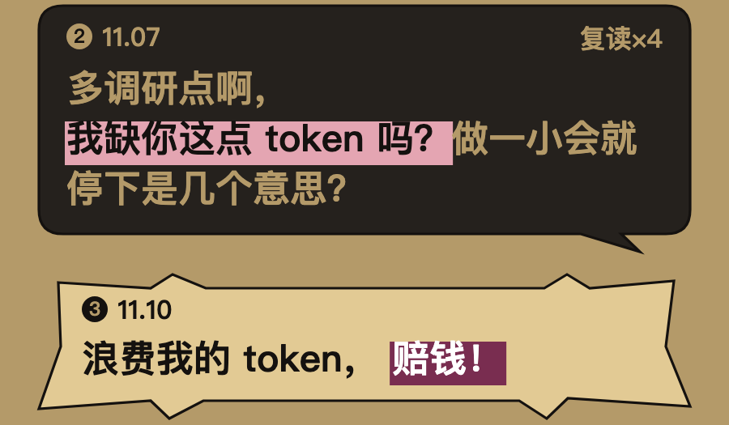
金地花带
Yusaku Kamekura 龟仓雄策，Classical Performing Arts Friendship Mission of Japan (1981)
完整长图
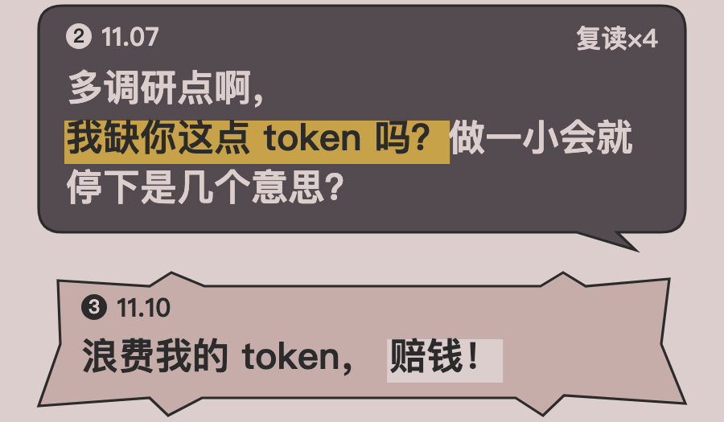
月下三味线
Kazumasa Nagai 永井一正，Nagauta Shamisen (1981)
完整长图
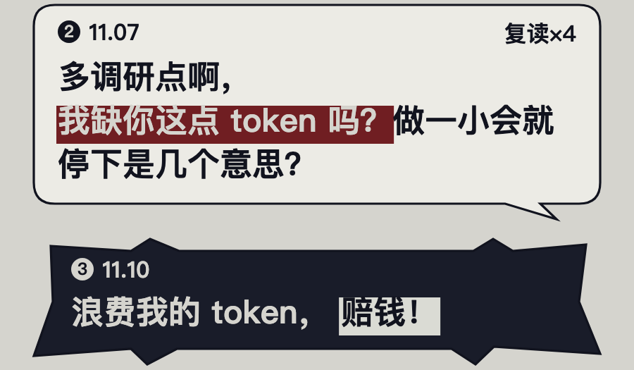
狂言绢白
Shigeo Fukuda 福田繁雄，Kyogen (1981)
完整长图织物印样
4 款
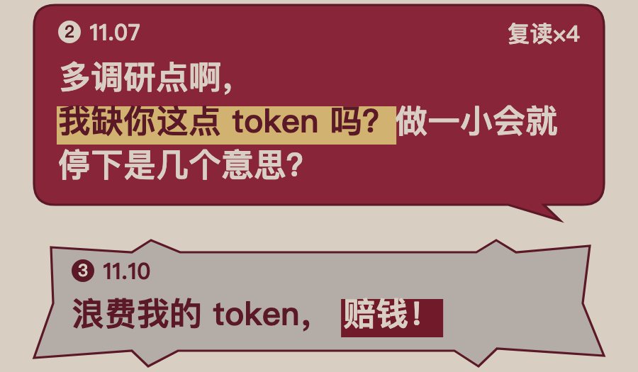
胭脂经线
Gunta Stölzl，Damast (1931)
完整长图
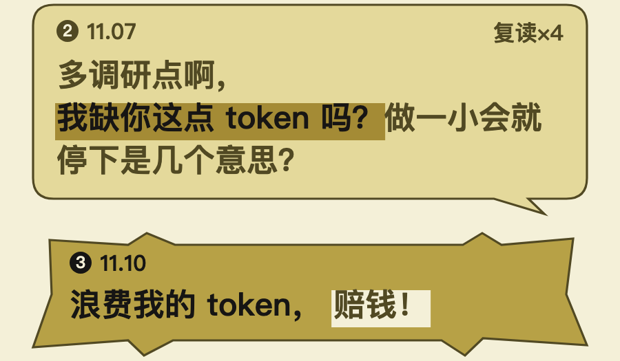
芥黄海芋
Raoul Dufy，Les Arums (1920)
完整长图
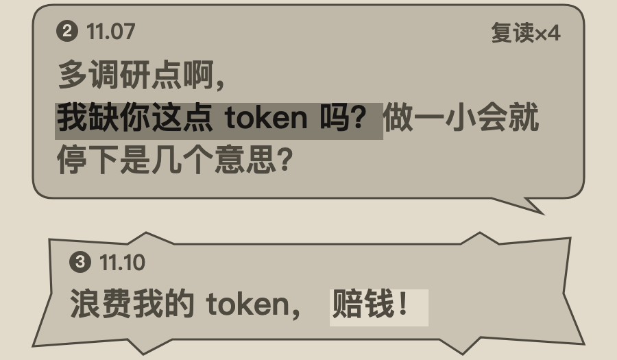
本色棉线
Anni Albers，Rail (1965)
完整长图
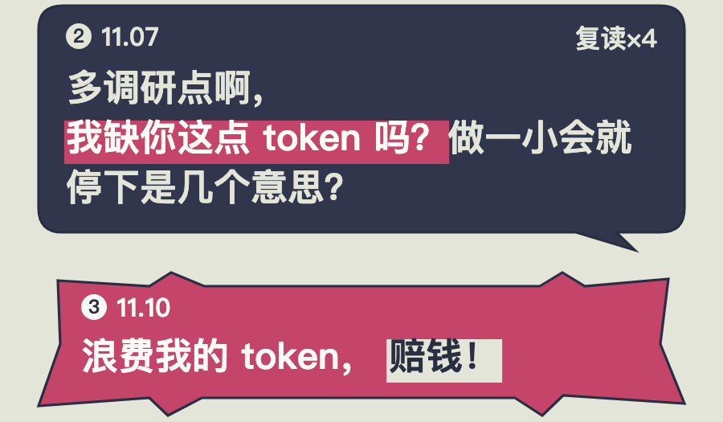
红日夜枭
Lucienne Day，Night and Day (约 1961–1962)
完整长图花房与果盘
4 款
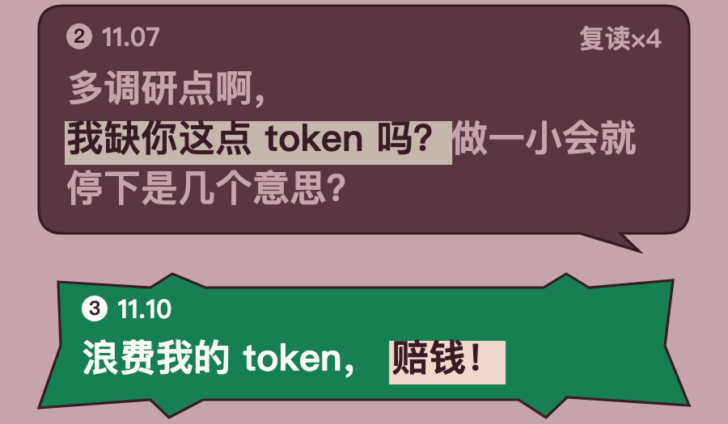
梅紫与翡翠
Georgia O’Keeffe，Jack-in-Pulpit - No. 2 (1930)
完整长图
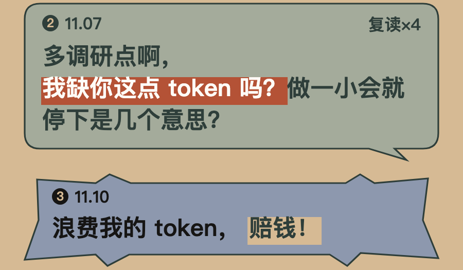
赭纸野花
Odilon Redon，Wildflowers (约 1905)
完整长图
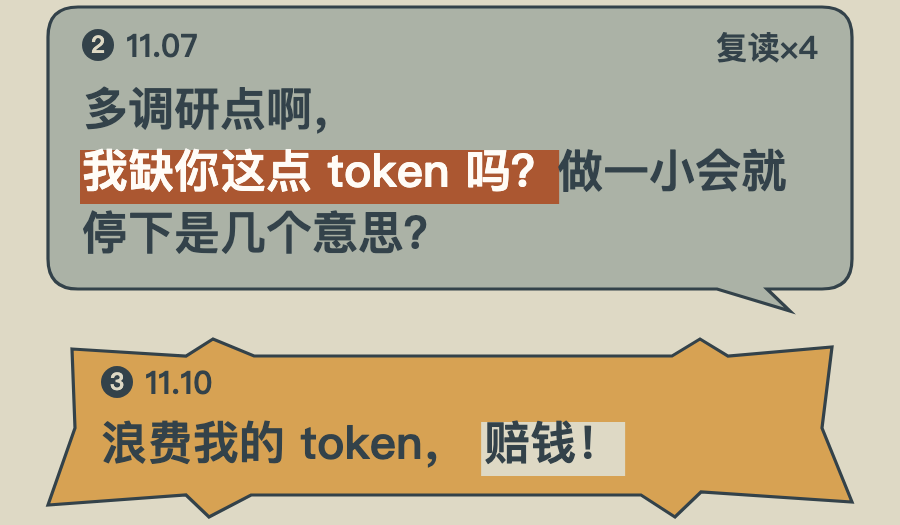
钴影熟桃
Paul Cezanne，Still Life with Apples and Peaches (约 1905)
完整长图
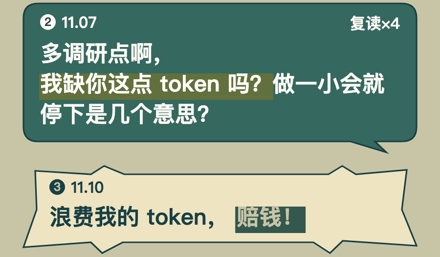
蓝绒木兰
Martin Johnson Heade，Giant Magnolias on a Blue Velvet Cloth (约 1890)
完整长图